Exploratory Data Analysis 2
Beatrice Taylor - beatrice.taylor@ucl.ac.uk
8th October 2025
Last week
Overview of lecture 1
Need to fill this in.
This week
First things first

Exploratory data analysis is the first step of any data science project.
Introducing statistical concepts
- This lecture is focussed on statistical concepts
- Data science is about using ideas from statistics to describe large datasets
- Here looking to describe numerical data
- Focus on probability distributions
Learning Objectives
By the end of this lecture you should be able to:
- Describe the characteristic features of common probability distributions.
- Calculate exponentials and logarithms.
- Evaluate whether a dataset is representative.
Motivation
What is the likelihood of events occuring?
Question
What is the probability of someone at UCL being over 190cm?
How can we try to answer this?
We could try and find someone on campus who is over 190cm.
Better to try and understand the distribution of heights.
Random Sampling
The dream vs reality
Ideally, we would like all the relevant data.
… in reality we normally only have some.
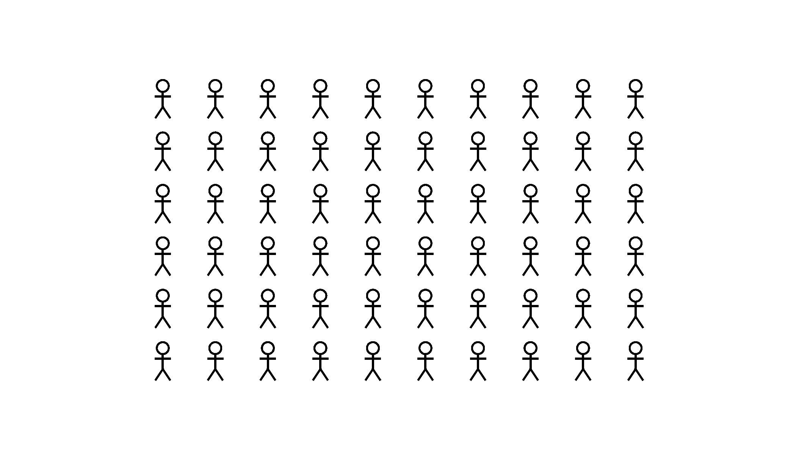
Approximating
Hence, we sample a subset of the data.
We need to choose our sample carefully. We want what happens in the sample to approximate what happens in the whole population.
In practise
- different sampling approaches
- random sampling
- systematic sampling
Is the data representative?
Bias
It’s important to understand if your dataset is unrepresentative or biased.
Cognitive bias
Systematic patterns in how we think about, and perceive, the world.
We all have cognitive biases.
These can impact our research:
- data collection
- data selection
- data processing
- modelling choices
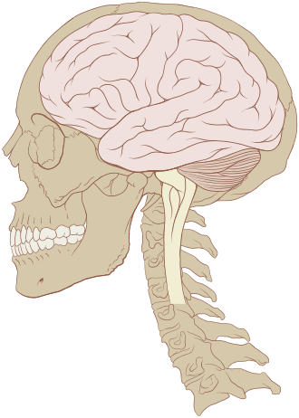
Why is this important?
If we’re not careful we can propagate bias to the research, and hence results.
This can lead to incorrect conclusions.
Types of bias
Research bias Cognitive bias is a specific type of research bias.
Dataset bias Particularly important when thinking about analysing large datasets, as there could be non-obvious patterns reflecting biases.
Types of dataset bias include: - Historical bias - Selection bias
Historical bias
Reflects existing, real world, inequalities
Examples:
- Police profiling
- Automated tools to detect ‘criminals’.
- Trained on datasets which reflect current racist practises.
- Hungry judges
- Tools to help sentencing of ‘criminals’.
- Patterns in the dataset — judges are less lenient before lunch.
Selection bias
When the sample chosen doesn’t represent the whole population of interest
Examples:
- Self selection Roy Model
- Underlying characteristics of people who self select into certain groups.
- WEIRD people
- Commonly sampled in behavioural sciences.
- Reflects a very small proportion of global population.
Can data ever be truly representative?
Probably not.
Failing that… .. we can acknowledge our biases!

Image credit: [xkcd](https://xkcd.com/2494/)Descriptive Statistics
What to declare
Descriptive statistics refers to the most basic statistical information about the dataset.
- Sample size (n)
- Mean, median, mode
- Standard deviation
- Range
Example 1
Let’s look at a dataset of students height.
Easy to print the summary statistics in Python, using pandas:
| Height_cm | |
|---|---|
| count | 1000.00 |
| mean | 161.19 |
| std | 9.79 |
| min | 128.59 |
| 25% | 154.52 |
| 50% | 161.25 |
| 75% | 167.48 |
| max | 199.53 |
Example 2
Sometimes we need more information.
| x | y | |||||||||||||||
|---|---|---|---|---|---|---|---|---|---|---|---|---|---|---|---|---|
| count | mean | std | min | 25% | 50% | 75% | max | count | mean | std | min | 25% | 50% | 75% | max | |
| dataset | ||||||||||||||||
| 1 | 11.0 | 9.0 | 3.316625 | 4.0 | 6.5 | 9.0 | 11.5 | 14.0 | 11.0 | 7.500909 | 2.031568 | 4.26 | 6.315 | 7.58 | 8.57 | 10.84 |
| 2 | 11.0 | 9.0 | 3.316625 | 4.0 | 6.5 | 9.0 | 11.5 | 14.0 | 11.0 | 7.500909 | 2.031657 | 3.10 | 6.695 | 8.14 | 8.95 | 9.26 |
| 3 | 11.0 | 9.0 | 3.316625 | 4.0 | 6.5 | 9.0 | 11.5 | 14.0 | 11.0 | 7.500000 | 2.030424 | 5.39 | 6.250 | 7.11 | 7.98 | 12.74 |
| 4 | 11.0 | 9.0 | 3.316625 | 8.0 | 8.0 | 8.0 | 8.0 | 19.0 | 11.0 | 7.500909 | 2.030579 | 5.25 | 6.170 | 7.04 | 8.19 | 12.50 |
Same same but different
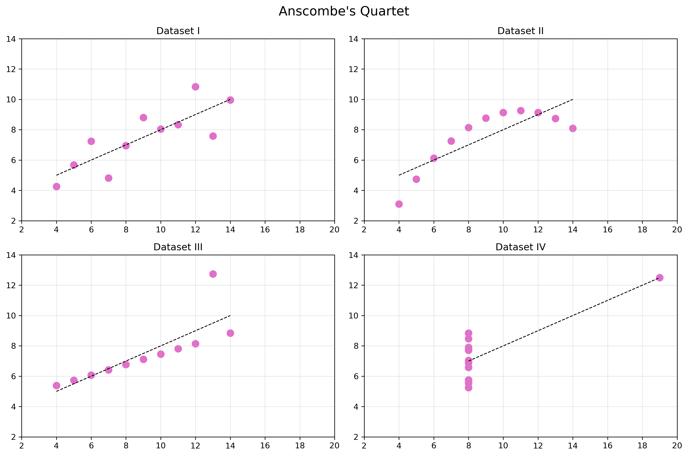
Normal Distribution
The most fundamental distribution
Everywhere you look
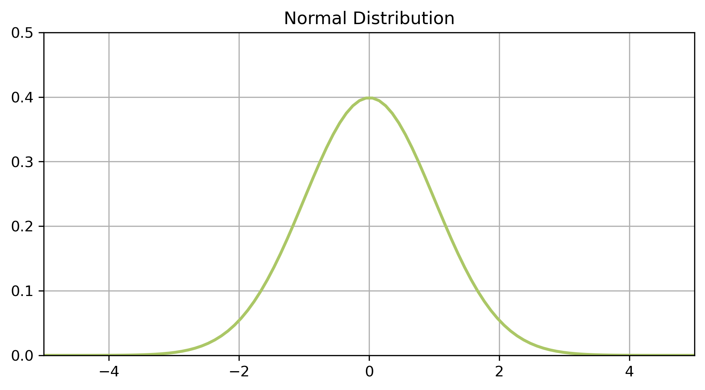
You’ve seen it all before
- Symmetrical
- Single peak
- Smooth tails on both sides
Naturally occurring
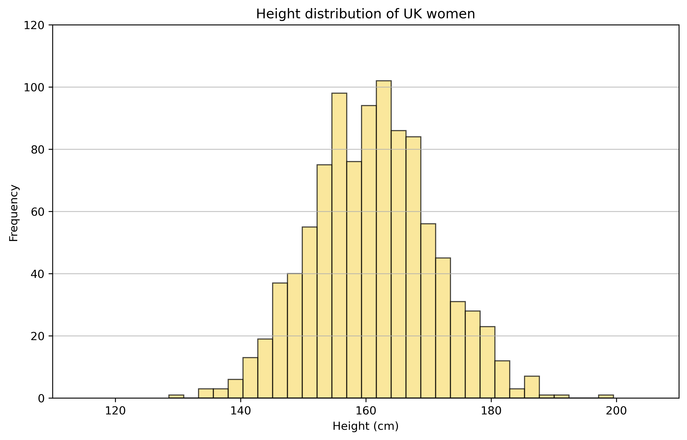
Naturally occurring
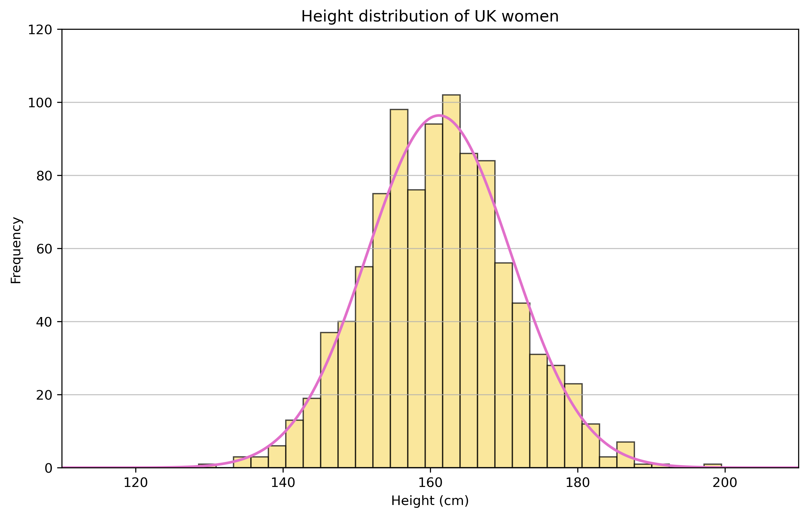
Uniquely described by two variables…
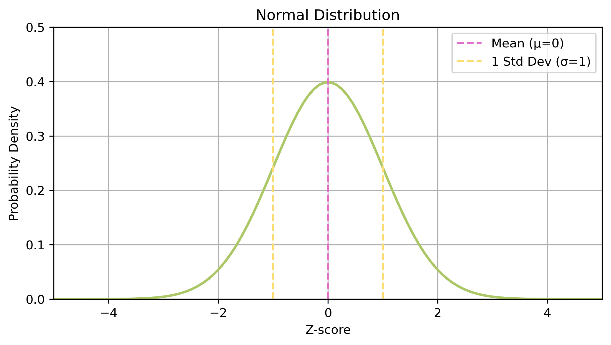
…and a probability distribution function
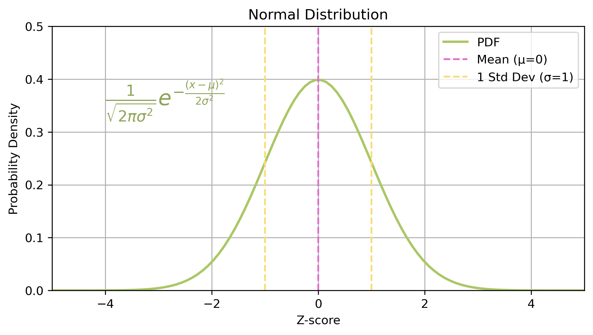
The probability density function (PDF) describes the likelihood of different outcomes for a continuous random variable
Key features
- Data is continuous
- it is something you measure not something you count
- Data is equally likely to be larger or smaller than average
- symmetric
- Characteristic size, all data points are close to the mean
- single peak
- There is less data further away from the mean
- smooth tails on both sides
Sampling distributions
The distribution of the random variable when derived from a random sample of size \(n\)
In the case of the normal distribution - standard deviation becomes:
\[\begin{align} \frac{\sigma}{\sqrt{n}} \end{align}\]Calculating probabilities
Can use the PDF to evaluate the probability at a specific point.
\[\begin{align} x \sim N(0,1) \end{align}\]Not everything is normal
Many real world datasets are approximately normally distributed.
But not all — might not have a characteristic size, or not continuous, or not symmetric.
More generally, what is a probability distribution?
Continuous vs. Discrete
Continuous data Measurable data which can take any value within a given range.
example: height
Discrete data Measurable data which can take seperate, countable values.
example: shoe size
Back to the probability function
\[\begin{align} p(x) \end{align}\]Having a function for the distribution allows us to evaluate the probability of events, and hence evaluate hypotheses.
For discrete distributions we have the probability mass function.
Sampling distributions
As for the normal distribution, in the general case we should be aware of the sampling distribution.
Binomial distribution
Coin toss
- I flip a coin 10 times
- How often can I expect to get at least 7 heads?
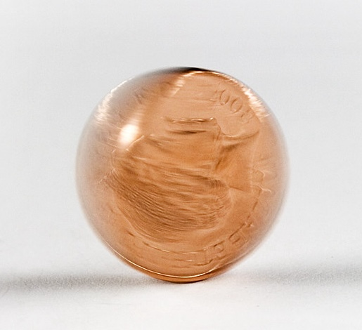
Probability mass function
\[\begin{align} P(X = k) = \binom{n}{k} p^k (1-p)^{n-k} \end{align}\]Where \(n\) is the number of trials, and \(p\) is the probability of success for each trial.
The probability mass function (PMF) describes the likelihood of different outcomes for a discrete random variable
Plotting the distribution
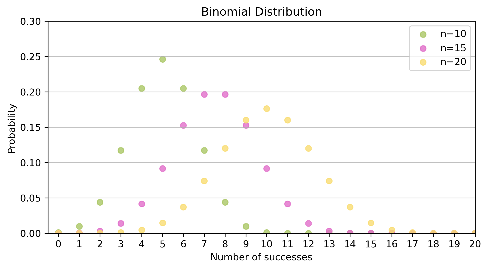
Example
- I flip a coin 10 times
- \(n=10\), \(p=0.5\)
- How often can I expect to get at least 7 heads?
- \(k \geq 7\)
Evaluating the PMF, we get:
\[\begin{align} P(X \geq 7) &= P(X=7) + P(X=8) + P(X=9) + P(X=10) \\ &= 0.1719 \end{align}\]Poisson distribution
Death by horse kicks
{kind=link}
Measuring rare events
- Imagine a situation where certain rare events (like arrival of mail) can occur in an independent fashion.
- The Poisson distribution estimates how many such events are expected within a time interval
- Fixed interval (e.g. one minute)
- Fixed rate of events (\(\lambda\)) (e.g. 4 cars per minute, \(\lambda=4\))
- Poisson distribution gives the probability of \(k\) events.
Probability mass function
\[\begin{align} P(X = k) = \frac{\lambda^k e^{- \lambda}}{k!} \end{align}\]Where \(\lambda\) is the expected number of events in a given interval.
Plotting the distribution
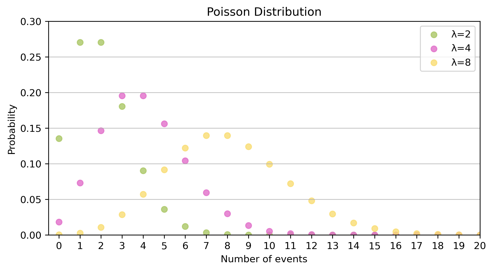
Example
- Between 1883 and 1893 there were an average of 2 deaths from horse kicks a year.
- \(\lambda=2\)
- What’s the probability of seeing 10 deaths from horse kicks in 1894?
Exponentials and Logarithms
Exponentials
If the Poisson measures the probability of x events within a time period, then the Exponential measures how long we are likely to wait between events.
The greatest shortcoming of the human race is our inability to understand the exponential function – Albert Bartlett (physicist)
A game of chess…
- You’ve invented chess.
- The emperor is really grateful - and asks what gift you would like in thanks.
- You ask for grains of rice.
- Specifically, rice to fill the chessboard, such that the number of grains double on each square.

Image credit: https://simple.wikipedia.org/wiki/Chaturanga…and rice
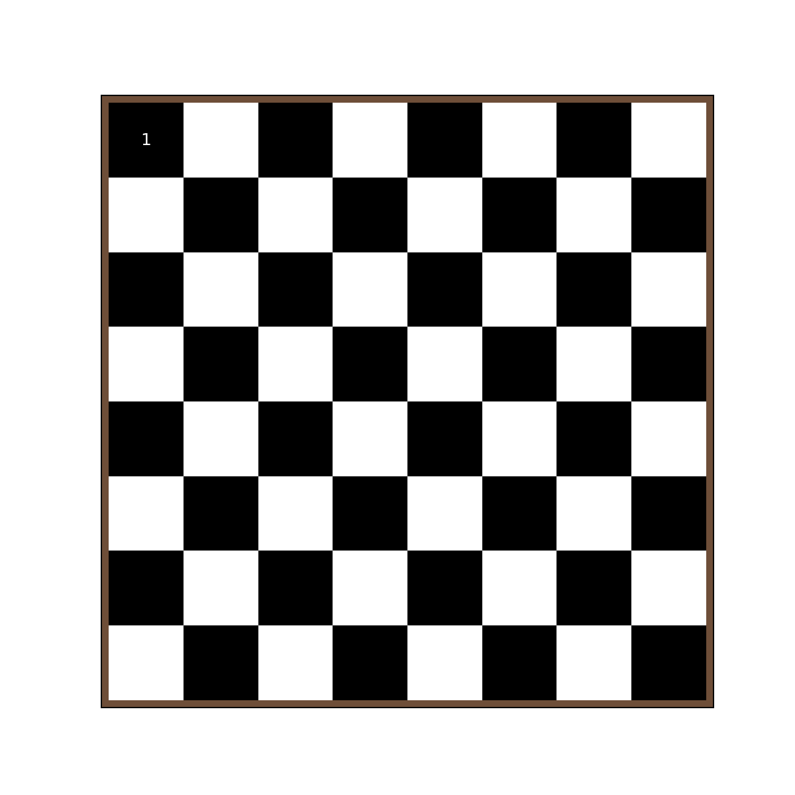
. . .
10^18
. . .
Which is more than the global production of rice.
What does this look like on a graph?
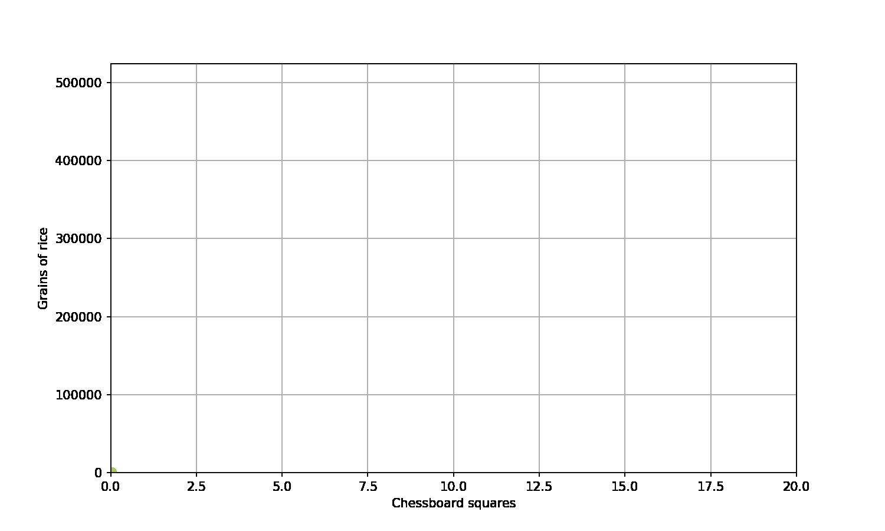
Generally we have
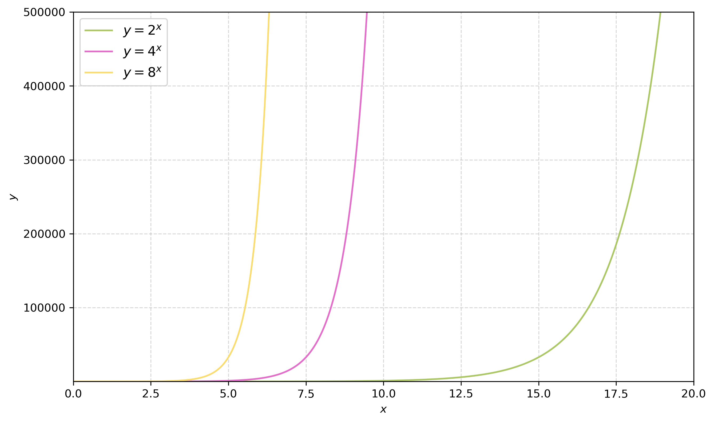
The exponential function
The (natural) exponential function is:
\[\begin{align} y=e^x \end{align}\]\(e\) here is eulers number - a mathematical constant.
\[\begin{align} e \approx 2.718... \end{align}\]When I can feed my town?
Allows us to answer questions like:
- “how many grains of rice at t=10?”
- “when will I have enough rice to feed my entire town?”
This is easier said than done – the best way is to invert the equation.
Inverse operations
The mathematical operation that reverses.
Subtract is the inverse of adding.
\[\begin{align} 2 + x=5 \implies 5-2=x \end{align}\]Divide is the inverse of multiplying.
\[\begin{align} 2 \times x =6 \implies 6 \div 2=x \end{align}\]Logarithms
Taking the logarithm is the inverse of taking the exponential.
More generally:
\[\begin{align} a^x = b \implies \log_a(b) =x \end{align}\]For the natural logarithm:
\[\begin{align} e^x = b \implies \log_e(b) =ln(b) = x \end{align}\]Natural logarithm
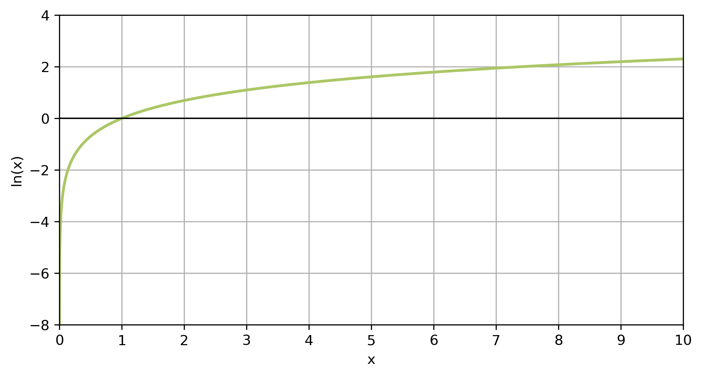
Log rules
There are some general rules for how we apply logarithms:
\[\begin{align} log_a(b \times c) &= log_a(b) + log_a(c) \\ log_a(\frac{b}{c}) &= log_a(b)-loc_b(c) \\ log_a(b^c) &= c \times log_a(b) \\ log_a(1)&=0 \\ log_a(a)&=1 \end{align}\]Transforming data
Some of the most important rules:
\[\begin{align} log_a(a^x) = x \\ ln(e^x) = x \end{align}\]When we have exponential data we can take the logarithm of it - and hence simplify it.
Overview
We’ve covered:
- Representative data
- Normal distribution
- Binomial distribution
- Poisson distribution
- Exponentials
- Logarithms
Practical
The practical will focus on exploratory data analysis for a variety of different datasets.
Have questions prepared!

© CASA | ucl.ac.uk/bartlett/casa